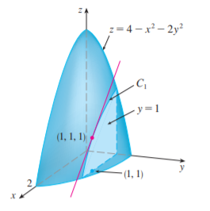

1. partial derivatives
1. N 维空间
不同于一元微分简单的实轴结构，高维空间中存在着复杂的连通图形，因此需要引入一些点集拓扑的定义。
- 邻域: 设 $P_0\in\Bbb{R}^n$ 为给定一点，称满足 $\rho(P_0,P)<\delta$ 的 $n$ 维点 $P$ 组成的集合为 $P_0$ 的 $\delta$ 邻域，记为 $U(P_0,\delta)$
- 记 $\overset{o}{U}(P_0,\delta)$ 为不含 $P_0$ 的去心邻域
- 内点: 设 $D\subset\Bbb{R}^n$, $P_0\in D$，若存在 $P_0$ 的一个邻域使得此邻域属于 $D$，称 $P_0$ 为 $D$ 的内点
- 界点: 设 $D\subset\Bbb{R}^n$, $P_0\in\Bbb{R}^n$，若 $P_0$ 的任何一个邻域总有 $D$ 中的点也总有 $D$ 外的点，称 $P_0$ 为 $D$ 的界点
- 聚点: $\forall \delta>0$，点 $P_0$ 的去心邻域 $\overset{o}{U}(P_0,\delta)$ 总有 $D$ 中无穷多个点，称 $P_0$ 为 $D$ 的一个聚点
- 聚点 $=$ 内点 $\cup$ 非孤立界点
2. 二重极限
定义: 设 $z=f(P)=f(x,y)$ 在 $D$ 上有定义，$P_0(x_0,y_0)$ 是 $D$ 的聚点，$A$ 是一个实数，若对 $\forall\varepsilon>0$，$\exists\delta>0$，$\rm s.t.$ 当 $P\in D\cap \overset{o}{U}(P_0,\delta)$ 时，恒有 $|f(x,y)-A|<\varepsilon$，则称 $f(x,y)$ 在 $P_0$ 处有二重极限。 记 $\displaystyle\lim_{(x,y)\to(x_0,y_0)}f(x,y)=\lim_{\substack{x\to x_0 \\ y\to y_0}} f(x,y)=A$
在一元函数中，极限存在 $\Longleftrightarrow$ 左右极限存在且相等。而由二重极限的定义，有:
$\displaystyle\lim_{(x,y)\to(x_0,y_0)}f(x,y)$ 存在 $\Longleftrightarrow$ $P(x,y)$ 沿任意方向、任意路径趋向于 $P_0$ 时，极限存在且相等
此结论的意义在于，可以通过列举路径证明极限不存在。
e.g. 计算 $\displaystyle\lim_{(x,y)\to(x_0,y_0)}\frac{xy}{x^2+y^2}$
沿 $y=kx$ 趋近: 原式 $=$ $\displaystyle\lim_{x\to 0}\frac{x\cdot kx}{x^2+k^2x^2}=\frac{k}{1+k^2}$
$k$ 可取任意值，因此原极限不存在
3. 偏导数
(1). 定义
定义: 设 $z$ 在 $D$ 上有定义，$(x_0,y_0)$ 是 $D$ 的聚点，
连续 $\Longleftrightarrow$ $\displaystyle\lim_{\substack{x\to x_0 \\ y\to y_0}} f(x,y)=f(x_0,y_0)$ 或 $\displaystyle\lim_{\substack{\Delta x\to 0 \\ \Delta y\to 0}} f(x_0+\Delta x,y_0+\Delta y)-f(x_0, y_0)=0$ 成立
定义: 设 $z$ 在 $P_0(x_0, y_0)$ 邻域内有定义，固定 $y=y_0$，
$z$ 在 $P_0$ 关于 $x$ 偏导存在 $\Longleftrightarrow$ $\displaystyle\lim_{x\to x_0} \frac{f(x,y_0)-f(x_0,y_0)}{x-x_0}=\lim_{\Delta x\to 0}\frac{f(x_0+\Delta x,y_0)-f(x_0,y_0)}{\Delta x}$ 极限存在，记为 $\displaystyle z_x'\Big|_{\substack{x=x_0 \\ y= y_0}}=f_x'(x_0,y_0)=f_1'(x_0,y_0)=\frac{\partial x}{\partial z}\Bigg|_{(x_0,y_0)}$
定义: 设 $z$ 在 $D$ 的每点都有偏导数，组成的新二元函数为偏导(函)数，记为 $\displaystyle z_x'=f_x'=f_1'=\frac{\partial x}{\partial z}$
(2). 几何意义

$f'_x(x_0,y_0)$ 表示曲线 $ \displaystyle \begin{cases} y=y_0 \\ z=f(x,y) \end{cases} $ 在点 $(x_0,y_0,f(x_0,y_0))$ 处切线的斜率
(3). 偏导与连续
一元: 可导 $\Rightarrow$ 连续，连续 $\nRightarrow$ 可导;
二元: 偏导 $\nRightarrow$ 连续，连续 $\nRightarrow$ 偏导;
对于偏导数，由 (1) (2)，其定义只能保证 $(x_0,y_0)$ 在相应的曲线上连续
e.g. $ (1).\ f(x,y)=\displaystyle \begin{cases} \dfrac{xy}{x^2+y^2} &(x,y)\ne (0,0) \\ 0 &(x,y)=(0,0) \end{cases}\quad (2).\ f(x,y)=\sqrt{x^2+y^2} $
$(1).$ $f(x,y)$ 在 $(0,0)$ 处极限不存在，故不连续；但 $f'_x(0,0)=f'_y(0,0)=0$
$(2).$ $f(x,y)$ 是基本初等函数，在 $(0,0)$ 连续，但 $\displaystyle f'_x(0,0)=\lim_{\Delta x\to 0}\frac{|\Delta x|}{\Delta x}$ 不存在
几何直观上，锥面连续，但尖点不存在导数
(4). 高阶偏导数
纯二阶偏导: $\displaystyle z'' _ {xx}=f'' _ {xx}(x,y)=\frac{\partial^2 z}{\partial x^2}$，混合二阶偏导: $\displaystyle z'' _ {xy}=f'' _ {xy}(x,y)=\frac{\partial^2 z}{\partial x\partial y}$
定理: 若 $z=f(x,y)$ 的 $f''_{xy}, f''_{yx}$ 都存在且连续，则 $f''_{xy}=f''_{yx}$